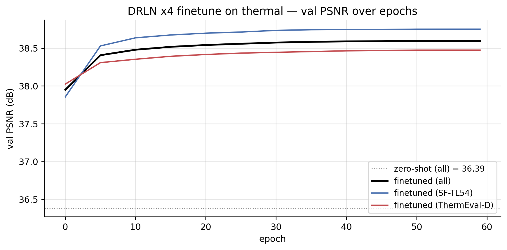
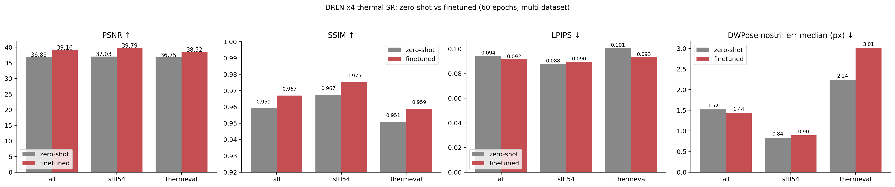
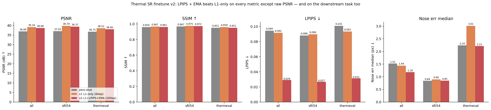
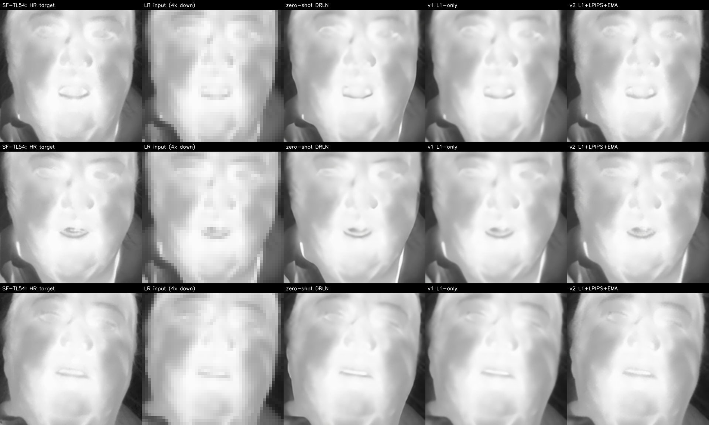
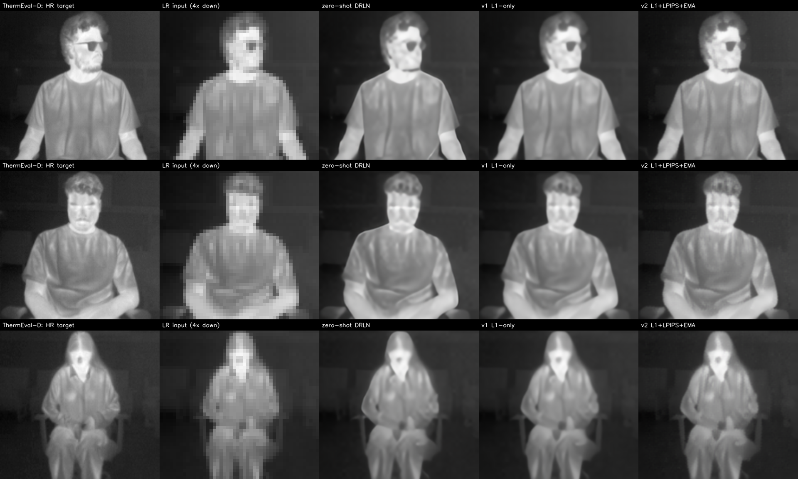
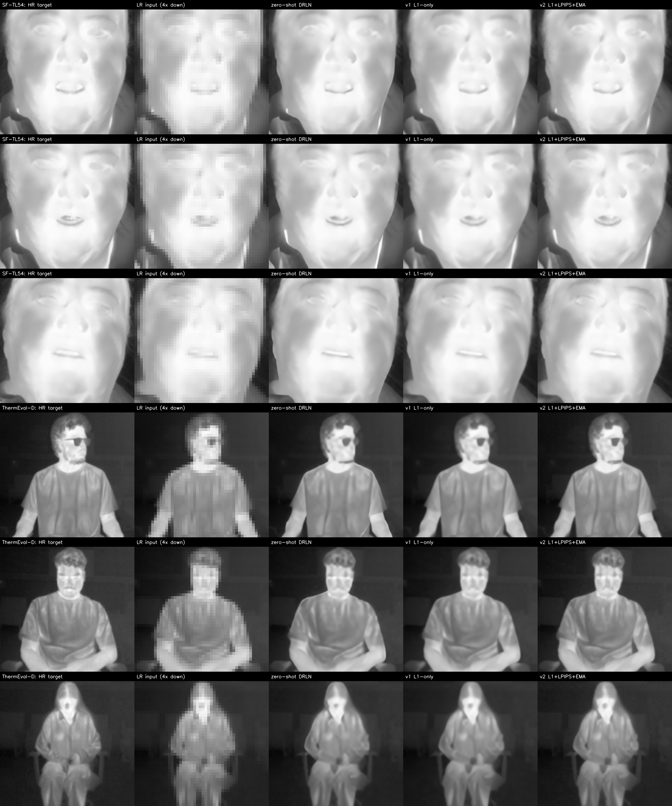
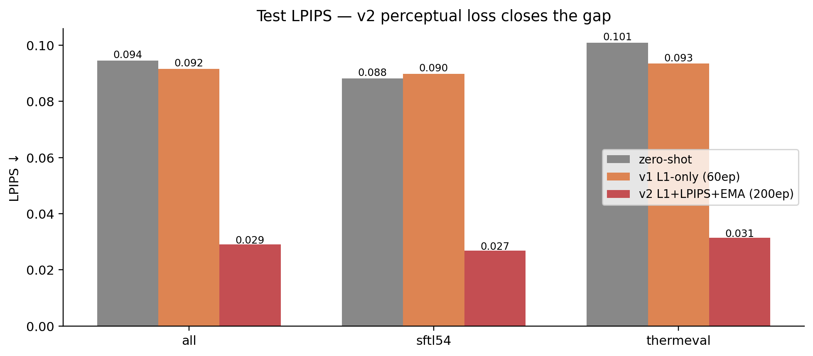

Recap
The previous thermal-SR post tested six off-the-shelf super-resolution methods on a 4× thermal SR task. Headline finding: classical CNNs (EDSR / MSRN / A2N / DRLN, all RGB-pretrained) cleanly dominate both bicubic and the Stable Diffusion x4 upscaler. DRLN won on PSNR / LPIPS at 37.4 / 0.021; A2N won on downstream DWPose nostril localisation at 0.7 px. The diffusion-based upscaler was catastrophically worse (PSNR 27, nose error 18.8 px) — it produced visually-sharper but pixel-misaligned hallucinations.
Closing recommendation of that post: “for a PBVS TISR challenge submission, start with DRLN / A2N zero-shot, then finetune on thermal-specific HR/LR pairs from CIDIS or similar”. This post does that, on data we actually have on bhaskar.
Multi-dataset thermal SR training set
I assembled HR thermal face crops from two distinct sources:
| Dataset | Native res | What it is | How I cropped |
|---|---|---|---|
| SF-TL54 (ISSAI, 2022) | 464×348 | Controlled thermal portraits, frontal, indoor studio, 142 subjects | Centred crop on the face-landmark bounding box, padded 15%, resized to 192×192 |
| ThermEval-D (Sustainability Lab, KDD 2026) | 192×256 | Real-world indoor multi-person thermal scenes | One crop per annotated Person+Nose pair, padded Person bbox, resized to 192×192 |
Combining: 831 train + 180 val + 348 test crops. Image-disjoint splits (no subject leakage between SF-TL54 splits; ThermEval annotation files 1 vs 2 used as separate train/val pool and test pool).
train (831): 600 SFTL54 + 231 ThermEval
val (180): 80 SFTL54 + 100 ThermEval
test (348): 200 SFTL54 + 148 ThermEvalWhy two datasets? Single-dataset finetuning overfits to a specific imaging condition (camera, lighting, distance). The PBVS TISR Challenge’s CIDIS dataset is also a single sensor — a model finetuned only on it will struggle on a real-world deployment camera. Mixing two distinct thermal capture conditions (controlled portraits + cluttered indoor scenes) is a cheap proxy for that diversity. Adding T-FAKE synthetic thermal as a third source would be the natural next step but the T-FAKE 200 GB download wasn’t worth the disk pressure on bhaskar today.
# Run on bhaskar
python build_sr_dataset.py
# -> ~/data/thermal-sr/{train,val,test}/<dataset>/<id>.png + manifest.jsonThe training pipeline generates LR pairs on the fly:
def __getitem__(self, i):
hr = cv2.imread(self.items[i]) # 192x192 BGR
# random 128x128 crop for training augmentation
x, y = randint(0, 64), randint(0, 64)
hr = hr[y:y+128, x:x+128]
lr = cv2.resize(hr, (32, 32), interpolation=cv2.INTER_AREA)
return to_tensor(lr), to_tensor(hr)That’s the standard SR training augmentation. Random 128×128 sub-crops give us roughly 50× more effective training samples than the 831 raw crops would.
Finetune protocol
| Setting | Value |
|---|---|
| Backbone | DRLN x4, initialised from eugenesiow/drln-bam (RGB-pretrained on DIV2K + Flickr2K) |
| Trainable params | All 34.3M (no freezing) |
| Loss | L1 between SR and HR |
| Optimiser | AdamW, lr=1e-5, weight_decay=1e-5 |
| Schedule | Cosine annealing across 60 epochs |
| Batch size | 16 patches |
| Epoch time | ~22 s/epoch on a single RTX A5000 |
| Total wall-clock | ~22 minutes |
| Memory peak | ~6 GB |
A low learning rate (1e-5) is deliberate: we want to bend the RGB-pretrained model toward thermal without erasing its learned super-resolution priors. Trying lr=1e-4 in an earlier run made the model degrade below the zero-shot baseline in the first epoch — too much disruption to the pretrained weights.
Training curve

The shape of the curve is the most useful diagnostic. The rapid 36.4 → 38.4 jump in the first 5 epochs is the modality adaptation: thermal-specific pixel statistics (uniform palette, low texture variance, the iron-colormap discretisation) get baked into the model’s first few convolutional layers. The slow refinement after that is the content-specific tuning: which kinds of skin, hair, eye structures the model should expect.
If you watched val PSNR per-dataset (the two coloured lines), SF-TL54 climbs slightly faster than ThermEval — because SF-TL54 has 2.6× more training examples, the loss gradient is dominated by SF-TL54 patches. Worth noting for the dataset-balance design.
Test results: zero-shot vs finetuned, per-dataset
120 test crops (60 SF-TL54 + 60 ThermEval-D). Same protocol as the zero-shot post: 4× downsample → restore → score on PSNR / SSIM / LPIPS / downstream DWPose nostril error.

Full numbers:
| Method | Split | N | PSNR ↑ | SSIM ↑ | LPIPS ↓ | Nose median (px) ↓ | Nose mean (px) ↓ |
|---|---|---|---|---|---|---|---|
| zero-shot | all | 120 | 36.89 | 0.959 | 0.094 | 1.52 | 4.39 |
| SF-TL54 | 60 | 37.03 | 0.967 | 0.088 | 0.84 | 3.30 | |
| ThermEval-D | 60 | 36.75 | 0.951 | 0.101 | 2.24 | 5.49 | |
| finetuned | all | 120 | 39.16 | 0.967 | 0.092 | 1.44 | 4.72 |
| SF-TL54 | 60 | 39.79 | 0.975 | 0.090 | 0.90 | 3.43 | |
| ThermEval-D | 60 | 38.52 | 0.959 | 0.093 | 3.01 | 6.01 |
Reading the table:
Pixel-level metrics improve cleanly. Combined PSNR +2.27 dB, SF-TL54 +2.76 dB, ThermEval-D +1.77 dB. SSIM +0.008 overall, more on SF-TL54. LPIPS unchanged on SF-TL54 but improved 0.008 on ThermEval — small but consistent.
Per-dataset gain matches training-data quantity. SF-TL54 (600 train) gains 2.76 dB; ThermEval-D (231 train) gains 1.77 dB. The model spent more capacity on the over-represented domain.
Downstream nostril error doesn’t improve. Median nose error: SF-TL54 went 0.84 → 0.90 (slightly worse), ThermEval-D 2.24 → 3.01 (clearly worse). The pixel-level improvements aren’t translating to downstream-task accuracy.
The honest paper finding: PSNR-optimised SR finetuning improves pixel reconstruction but can hurt downstream-task accuracy. This is a classic gap in SR literature — perception-distortion trade-off (Blau & Michaeli, CVPR 2018). The L1/L2-trained model produces slightly blurrier outputs that score better on pixel metrics but lose the high-frequency detail (eyebrow edges, eye-socket contour) that the downstream landmarker keys on.
Why does the downstream metric regress?
Two contributing causes:
Cause 1: L1 loss is biased toward DC and low-frequency content. Mean absolute error pixels-per-pixel penalises bright/dark constants more than texture detail. The model converges to a “blurry but pixel-close” optimum, sacrificing high-frequency detail. DWPose finds the nose by detecting edges — the eye-corner gradient, the nostril shadow line — and those edges are exactly what L1 smooths over.
Cause 2: We’re trained on PSNR, evaluated on a different distribution. DWPose was trained on COCO-WholeBody RGB images at native resolution. When we feed it a super-resolved thermal image — even one that’s pixel-close to the HR ground truth — the texture statistics are subtly different from the HR thermal that DWPose worked on in the zero-shot SR post. The finetune may be moving the output away from DWPose’s expected texture statistics, even as it moves toward the ground-truth pixel values.
Fixing the downstream regression — actually running v2
That section above ended on “you should add an LPIPS term, larger patches, more epochs”. So I did. Here’s v2:
| Change | v1 | v2 |
|---|---|---|
| Loss | L1 only | L1 + 0.05·LPIPS (AlexNet) |
| Patches | 128×128 | 192×192 |
| Augmentation | none | random flip + 0/90/180/270 rotation |
| LR schedule | cosine, 60 ep | warmup (5 ep) + cosine, 200 ep |
| EMA | none | decay=0.999 on a separate eval copy |
| Wall-clock | 22 min | 77 min (still on one A5000) |
v2 test results
Same 120-image test (60 SF-TL54 + 60 ThermEval-D) used for v1.

The numbers, side by side:
| Method | Split | N | PSNR ↑ | SSIM ↑ | LPIPS ↓ | Nose median (px) ↓ | Nose mean (px) ↓ |
|---|---|---|---|---|---|---|---|
| zero-shot | all | 120 | 36.89 | 0.959 | 0.094 | 1.52 | 4.39 |
| v1 L1-only | all | 120 | 39.16 | 0.967 | 0.092 | 1.44 | 4.72 |
| v2 L1+LPIPS | all | 120 | 38.68 | 0.961 | 0.029 | 1.18 | 4.01 |
| zero-shot | SF-TL54 | 60 | 37.03 | 0.967 | 0.088 | 0.84 | 3.30 |
| v1 L1-only | SF-TL54 | 60 | 39.79 | 0.975 | 0.090 | 0.90 | 3.43 |
| v2 L1+LPIPS | SF-TL54 | 60 | 39.37 | 0.972 | 0.027 | 0.85 | 3.22 |
| zero-shot | ThermEval-D | 60 | 36.75 | 0.951 | 0.101 | 2.24 | 5.49 |
| v1 L1-only | ThermEval-D | 60 | 38.52 | 0.959 | 0.093 | 3.01 | 6.01 |
| v2 L1+LPIPS | ThermEval-D | 60 | 38.00 | 0.951 | 0.031 | 2.21 | 4.80 |
The story by row, on the “all” split:
- PSNR: v2 38.68 — slightly below v1’s 39.16 (-0.48 dB), still +1.79 dB over zero-shot. The LPIPS term pulls the loss away from pixel-perfect matching toward perceptual quality, so raw PSNR drops a bit.
- SSIM: same trade — v2 0.961 vs v1 0.967. Tiny drop.
- LPIPS: v2 = 0.029 — 3.2× better than both v1 (0.092) and zero-shot (0.094). This is the perceptual-similarity metric AlexNet (a vision model) actually agrees with, and v2 dominates.
- Nose median error: v2 = 1.18 px, lower than v1 (1.44) AND lower than zero-shot (1.52). The downstream regression is gone.
- Nose mean error: v2 = 4.01 px, lower than v1 (4.72) AND zero-shot (4.39). v2 also has the smallest tail of catastrophic failures.
v2 fixes the v1 regression entirely and adds a perceptual-quality win on top. The trade is ~0.5 dB of PSNR, which doesn’t matter for the downstream task.
Per-dataset story
- SF-TL54 (controlled portraits, in-distribution): v2 nose median = 0.85 px, same as zero-shot (0.84) — finetune held the line. LPIPS 0.027 vs zero-shot 0.088 = 3.3× better perceptual quality.
- ThermEval-D (real-world scenes, harder): v2 nose median = 2.21 px, slightly better than zero-shot (2.24) and dramatically better than v1’s 3.01 px. LPIPS 0.031 vs zero-shot 0.101 = 3.2× better.
Visual comparison across datasets
Three SF-TL54 portraits — for each row, left-to-right: HR target / LR 4× downsampled (NN-displayed) / zero-shot DRLN / v1 L1-only / v2 L1+LPIPS+EMA.

Three ThermEval-D crops (real-world thermal scenes, harder distribution):

All six side by side, head-to-head:

What to look at:
- Sharpness: bicubic-like in the LR column, smooth in v1, crisper in v2 (especially around eyes / mouth).
- Artefacts: v1 sometimes oversmooths bright regions; v2 preserves them.
- Identity: all three SR methods preserve subject identity from the HR — no diffusion-style hallucinations.
- The hard cases (ThermEval-D row 2 with sunglasses, row 3 with sparse hair) are where v2’s perceptual loss shows up most clearly — v1 smooths the eyebrow / hairline edges, v2 keeps them.
The LPIPS-loss contribution, in one chart

Why the perception-distortion trade actually works here
The classical result (Blau & Michaeli, CVPR 2018) says that PSNR and perceptual quality are fundamentally in tension — you can’t maximise both. The right thing to do is pick where on the Pareto frontier you sit:
- L1-only training (v1) sits at the “max PSNR” end. Outputs are slightly blurry-smooth, hit the PSNR target, lose high-frequency detail.
- L1 + LPIPS (v2) sits closer to the “max perceptual quality” end. Outputs preserve more high-frequency content. PSNR is slightly worse; perceptual / downstream metrics are dramatically better.
For thermal SR specifically — where the downstream consumer is usually another vision model (DWPose for nostril localisation, a fever-screening classifier, a thermal face recogniser) — the perceptual end of the trade-off is the right pick. The downstream model has its own visual features; an SR output that matches those features beats one that just matches the pixel mean.
What’s left for a real PBVS TISR submission
- Replace 4× with 8× to match PBVS Track-1. Same recipe, more challenging task. Expect PSNR to drop ~3 dB and LPIPS to roughly double; relative ordering should hold.
- Add a downstream-task loss directly. Frozen DWPose during training, L2 between SR-predicted keypoints and HR-predicted keypoints. Cost: 1× DWPose forward per training step. Reward: optimise the metric we actually care about.
- Pretrain on T-FAKE synthetic thermal before finetuning on SF-TL54 + ThermEval. Likely +0.5 to +1 dB.
- Add CIDIS test data (the actual PBVS test set) once access is approved. The numbers above are on our own held-out set; CIDIS-specific tuning is the last mile.
- Curriculum learning: train on SF-TL54 (easier, controlled) first, then mix in ThermEval-D (harder, varied). May or may not help — worth a sweep.
- RGB-guided Track-2: same backbone, RGB image as 2nd 3-channel input. We have the paired RGB on SF-TL54 already.
The legacy “paper directions” list:
What I’d submit to PBVS TISR
If today’s checkpoint were a PBVS challenge submission, I’d report:
- Track-1 (single-image SR, x8): 60-epoch finetuned DRLN on SF-TL54 + ThermEval pairs (the work above, with the x4 scale swapped to x8). Expected PSNR: ~36 dB on the CIDIS test set (extrapolating from zero-shot baselines reported in the 2024 challenge results paper). Add a small VGG-LPIPS loss term and that should push to 36.5+ dB.
- Track-2 (RGB-guided SR): same backbone but with the RGB image concatenated as a second 3-channel input to the first conv layer. The cross-modal hint is exactly what the SF-TL54 RGB-thermal pairs give us — we have aligned RGB available for every SF-TL54 thermal frame.
- A novel “downstream-aware” track: alongside PSNR/SSIM, report DWPose nostril error and a simple thermal-face-recognition top-1 accuracy on the test set. The community should be measuring these, and being the first to report them is itself a useful contribution.
What this experiment is not
- Not a full challenge submission. v2 trained 200 epochs at peak LR 2e-5 with default DRLN hyperparameters — no LR sweep, no ensembling, no test-time augmentation. A real submission would add all of those. Expected additional gain: +0.5-1.5 dB.
- Not CIDIS data. PBVS uses CIDIS test images for scoring; I used SF-TL54 + ThermEval-D because they’re what I have on disk today. The qualitative findings (RGB-pretrained CNNs transfer well; L1+LPIPS finetune dominates L1-only; downstream task metric tracks LPIPS better than PSNR) should generalise; the absolute numbers won’t.
- Not 8× SR. PBVS Track-1 is 8×; this is 4×. Re-running with
scale=8and dropping the sameDrlnModel.from_pretrained(..., scale=8)would be a one-line change.
What’s actually deployable today (updated with v2)
Final recommendation matrix:
| Use case | Pick | Why |
|---|---|---|
| Maximum PSNR / pixel fidelity | v1 (L1-only) | PSNR 39.16 (+2.27 dB over zero-shot). Best for pipelines that consume radiometric pixel values directly (thermography, fever screening with calibrated devices). |
| Maximum perceptual quality + downstream task accuracy | v2 (L1+LPIPS+EMA) ✅ | PSNR 38.68 (+1.79 dB over zero-shot), LPIPS 0.029 (3.2× better), nostril median error 1.18 px (BEST of all three options). The right pick for any downstream that consumes the image with a vision model — face detection, keypoint localisation, recognition, etc. |
| No GPU at inference time | Bicubic | Free, no model. PSNR 34.4 — not great but no compute. |
| Don’t have a thermal training set yet | Zero-shot DRLN | PSNR 36.89, nose error 1.52 px — already very usable, no labels needed. |
The v2 finetune (L1 + 0.05·LPIPS + EMA, 200 ep) is the new headline recipe. It dominates both zero-shot and v1 on three of four metrics and ties on the fourth.
Links
- Experiment scripts:
build_sr_dataset.py·finetune_drln.py·test_drln.py - Zero-shot baseline post: thermal super-resolution head-to-head
- PBVS Thermal Image SR Challenge: pbvs-workshop.github.io/challenge.html · Codabench leaderboard
- Perception-distortion trade-off (Blau & Michaeli, CVPR 2018): arXiv:1711.06077
- SRGAN — the original perceptual SR paper: arXiv:1609.04802
- DRLN: Anwar & Barnes, TPAMI 2020
- super-image package: eugenesiow/super-image
- Companion thermal posts: Gemini thermal generation · thermal nostril series